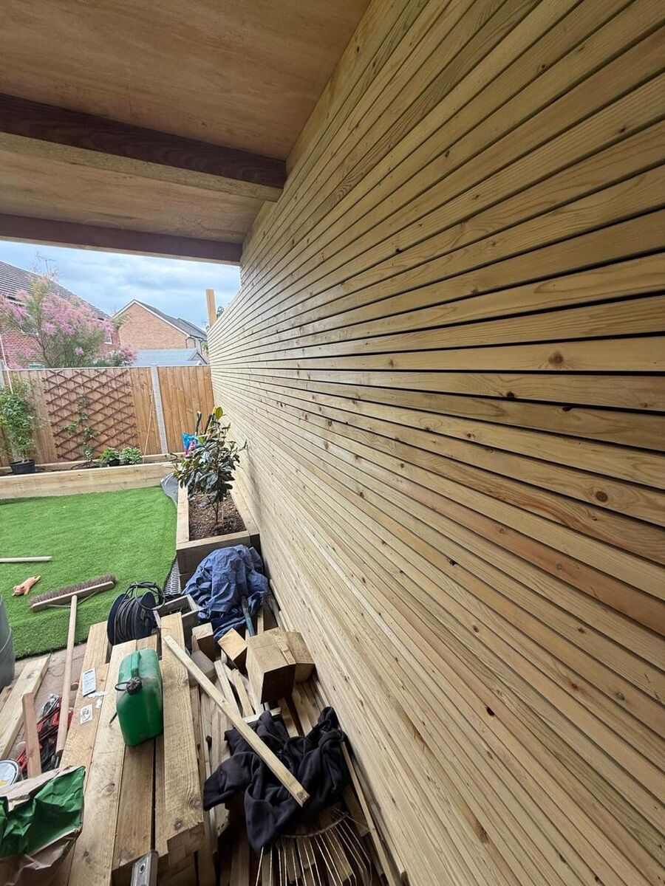
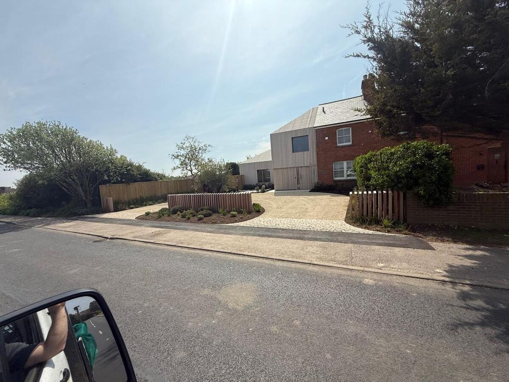

Your garden fence does more than mark a boundary. It frames your outdoor space, provides privacy, adds security and contributes significantly to the overall appearance of your property. Choosing the wrong fence can undermine even the most beautiful garden — while the right one enhances everything within it.
This guide covers every fencing option available to homeowners in West Sussex, with honest advice on the pros, cons and costs of each.
Understanding Your Needs
Before choosing a fencing style, consider what you need from it:
- Privacy — Do you need full screening from neighbours, or is a more open style acceptable?
- Security — Is keeping children or pets in (or intruders out) a priority?
- Aesthetics — Should the fence be a design feature in its own right, or blend into the background?
- Wind exposure — Coastal and exposed properties in areas like Chichester, Emsworth and the Witterings need fencing that can handle strong winds.
- Maintenance — How much time and effort are you prepared to invest in upkeep?
- Budget — Fencing costs range from £30 per metre for basic panels to over £150 per metre for premium bespoke installations.
Fencing Types Compared
Close Board (Featheredge) Fencing
The most popular choice for garden boundaries in West Sussex, and for good reason. Close board fencing consists of vertical featheredge boards nailed to horizontal rails, supported by timber or concrete posts.
- Pros: Excellent privacy, strong, repairable (individual boards can be replaced), long-lasting when treated
- Cons: Requires periodic treatment (every 2–3 years), can look utilitarian without capping or trellis
- Cost: £45–80 per metre installed, depending on height and finish
- Lifespan: 15–25 years with proper maintenance
At A Sterling Landscapes, we install close board fencing with concrete gravel boards at the base (to prevent timber contact with soil), quality posts set in postcrete or concrete, and a professional finish that includes capping rails and optional trellis topping.
Composite Fencing
Composite fencing has revolutionised the market. Made from a blend of wood fibres and recycled plastic, composite boards offer the appearance of timber with virtually zero maintenance.
- Pros: No painting, staining or treatment required. Rot-proof, fade-resistant, consistent colour. Contemporary appearance.
- Cons: Higher upfront cost. Limited ability to customise dimensions. Can look uniform — some people prefer the natural variation of timber.
- Cost: £80–150 per metre installed
- Lifespan: 25+ years
Composite fencing works particularly well in modern garden designs where clean lines and a consistent finish are desired. We have installed composite fencing across Chichester, Worthing and Brighton — browse our fencing gallery to see examples.
Panel Fencing
Pre-made fence panels are the most affordable option. Standard lap panel fencing is readily available from builders' merchants and is the most commonly installed fencing in the UK.
- Pros: Affordable, quick to install, widely available
- Cons: Weaker than close board, panels cannot be repaired easily, tends to look cheap, shorter lifespan
- Cost: £30–50 per metre installed
- Lifespan: 8–15 years
We generally advise clients against standard panel fencing for premium properties. The quality simply does not match the standard of the garden it surrounds. However, overlap or tongue-and-groove panels are a step up in quality and appearance.
Picket Fencing
Picket fencing offers a classic, open-style boundary ideal for front gardens and period properties. It does not provide privacy but creates a charming, welcoming boundary.
- Pros: Attractive, traditional appearance. Good for front gardens. Does not block light.
- Cons: No privacy. Not suitable for security. Requires regular painting or staining.
- Cost: £40–70 per metre installed
- Lifespan: 15–20 years with maintenance
Post and Rail
A rural-style open fence consisting of horizontal rails fixed to upright posts. Common on larger properties, paddocks and country gardens around Petersfield and the South Downs.
- Pros: Inexpensive for long runs. Suits rural settings. Low visual impact.
- Cons: No privacy. Minimal security. Does not contain pets or children.
- Cost: £20–40 per metre installed
- Lifespan: 15–25 years
Bespoke Fencing
For properties where a standard solution simply will not do, bespoke fencing offers limitless design possibilities. Horizontal slat screens, cedar cladding, mixed-material boundaries combining timber with rendered walls — the only limit is imagination.
- Pros: Completely unique. Designed to complement your property and garden. Statement piece.
- Cons: Higher cost. Requires a skilled team to design and build.
- Cost: £100–200+ per metre installed
- Lifespan: 20–30+ years depending on materials

Fencing Regulations in West Sussex
There are a few legal considerations to be aware of:
- Height limits: Fencing up to 2 metres high at the rear does not normally require planning permission. Front boundary fencing above 1 metre adjacent to a highway may require permission.
- Listed buildings and conservation areas: Properties in conservation areas (including parts of Chichester city centre, Bosham and Emsworth) may need planning consent for fencing changes.
- Boundary ownership: Check your title deeds to confirm which boundaries you are responsible for. The T-mark on the plan indicates ownership.
How to Choose: Our Recommendation
For most gardens in West Sussex, we recommend either close board fencing with capping and trellis for a traditional look that offers excellent value and longevity, or composite fencing for a contemporary, maintenance-free solution.
For premium properties and garden transformations, bespoke fencing designed as part of the overall garden scheme delivers the most impactful results. This is what we excel at — creating boundary solutions that are integral to the garden design rather than an afterthought.
Ready to Discuss Your Fencing Project?
A Sterling Landscapes installs all types of fencing across Chichester, West Sussex and beyond. We offer free consultations and detailed quotes — with honest advice on what will work best for your property and budget.
Get a Free Fencing Quote
Tell us about your project and we will provide a detailed, no-obligation quotation.